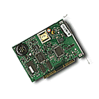
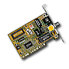
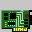

 |
 |
| modem | kartice |
- Kartice
- SCSI
- Skener
- Strimer
Programske (softverske) naredbe kojima pokreæe hardver ili vrši obrada informacija, prebacivanje podataka na obradu do procesora, prikazivanje podataka na monitoru i beleženje podataka na hard ili flopi disk. Pošto se sve informacije koje korisnik obražuje nalaze na (hard ili flopi) disku, rad sa diskom je najèešæa operacija. Tako je svoje ime dobio i najzastupljeniji operativni sistem, MS DOS, Microsoft Disk Operativni Sistem.
MS DOS (Microsoft Disk Operating System)
Proizvod firme Microsoft. Prva verzija datira iz 1981. god. Najzastupljeniji OS na PC kompjuterima. Preporuèuje se verzija 5.0 ili viša.
 |
|||
| mrežna | hdd/fdd | muzièka | SCSI |
Namenjene su ostvarivanju komunikacije izmeðu nekog ureðaja ili softvera i samog kompjutera. Glavna uloga im je da obezbede:
Tako postoje: video,
keyboard, HDD&FDD, I/O adapter itd.
Za tastaturu je ceo interfejs u jednom èipu ( CPU INTEL 8041,
8042 ili 8048 ). Za HDD & FDD postoje IDE i SCSI adapteri obièno
kombinovani sa I/O portovima. Za video sekciju posebna kartica
(MDA, HGC, CGA, EGA, VGA itd. ). Postoje mrežna kartica, skener i modem kartica itd.
Na primer serijska kartica odnosno RS232C adapter, nalazi se u
svakom kompjuteru.
Koristi sledeæe parametre:
adresa |
IRQ |
|
| COM 1 | 3F8 |
4 |
| COM 2 | 2F8 |
3 |
| COM 3 | 3E8 |
4 |
| COM 4 | 2E8 |
3 |
Od pojave novijih skazi standarda zovu ga i SCSI 1.
SCSI (Skazi) ureðaji mogu
biti CD-ROM drive, Photo-CD drajv, Hard disk drajv, Skener,
Digitalna kamera, Magneto-optièki drajv, Rewritable drive, Tejp
drajv, Digital Audio Tape, Printer i drugi kompatibilni SCSI
ureðaji.
Karakteriše ih velika propusna moa. Pored toga na jedan SCSI
adapter možete nakaèiti još 7 ureðaja ( SCSI chain-256
teoretski maksimum ). Svaki od prikljuèenih ureðaja mora imati
SCSI ID # od 0 do 6. SCSI ID # 7 ima SCSI kontroler i to je
ureðaj sa najveaim prioritetom. Ukoliko ima više Hard diskova
sistem se podiže sa diska sa najnižim prioritetom (0). Na kraju
lanca morate staviti terminator. Obièno su to džamperi ili
svièevi na samom ureðaju koji prikljuèujete. Sam kontroler se
prema tome mora konfigurisati. Brzina transfera podataka je preko
4MB/sec.
Noviji unapreðeni SCSI 32bitni sistem. Ima prošireni set komandi i omoguæeno je prikjuèivanje dodatnih tipova ureðaja. Konektori imaju 50 pinova. Postiže brzine do 6MB/sec. 8 bitni transfer.
Brzina prenosa podataka do 20MB/sec. 16-bitni transfer. Može da primi na jedan adapter 15 ureðaja.
Omoguæavaju Data Transfer Rate do 40MB/s.
SCSI adapteri za PCI magistralu imaju na sebi RISC I/O procesor i mogu da postižu na WIDE SCSI ureðajima brzine do 132MB/sec (teorijski).
Ureðaji namenjeni beleženju podataka na strimer trake.
Povezuju se pljosnatim data kablom na postojeæi FDD kabl.
Koriste magnetne trake od 60, 125, 250MB ili sliènih kapaciteta.
Traku je pre upotrebe potrebno formatirati. Postoji nekoliko
formata a rad sa strimerima obezbeðuje namenski softver.
Jedno od najboljih rešenja za BackUp
podataka.
{kind=link}
{kind=link}
{kind=link}
{kind=link}
{kind=link}
{kind=link}